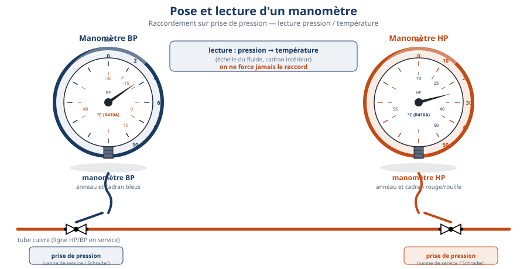

Thème / DomaineBraser, raccorder les organes, poser les manomètres
Module atelier A2-b · 4 hFaçonnage complexe et pose des manomètres
SéquenceS11 · sem. 5 · 29/09/2026 (matin)
Nom________________
Prénom________________
Date________________
Positionnement01234
Mise en situation professionnelle
Le chantier se poursuit. Ordre d'intervention n° OI-2026-S11-02 : le client demande de
terminer les façonnages complexes restants sur votre ligne liquide (chapeau de gendarme,
collecteur), puis de poser et raccorder les manomètres BP et HP sur les prises de pression
installées au module A2-a, et de lire la double graduation du manomètre (principe pression-température).
Vous travaillez en autonomie jalonnée : le professeur valide chaque étape avant que vous passiez à la
suivante, mais c'est vous qui menez le chantier. La mise sous pression du circuit et le relevé complet des
pressions se font au module A2-c : aujourd'hui, pas de mise sous pression du circuit complet.
Ligne liquide équipée — schéma réduit pour situer les prises de pression BP et HP. Le schéma complet, coté, figure en annexe pleine page A3 paysage en fin de document.
Tâches
T10 Repérer, raccorder, assembler les réseaux fluidiques, aérauliques et électriques T11 Contrôler les circuits hors fonctionnement
Savoirs
S5.5 Réseaux fluidiques et mécanique des fluides prérequis S6.1 Santé et sécurité au travail prérequis S2.1 Outils, normes et représentation augmenté S5.2 Fluides frigorigènes, huiles frigorifiques nouveau
Savoir-être
Autonomie entre les jalons · tenue rigoureuse du carnet de bord · honnêteté de la mesure
Compétences (≤ 4)
ÉvaluationC3.4 Façonner, raccorder, assembler, isoler les circuits Découverte→ConfortementC4.5 Mesurer, comparer des grandeurs
Objectifs — je serai capable de…
réaliser un chapeau de gendarme et un collecteur conformes au gabarit demandé ;
poser un manomètre BP sur la prise de pression bleue et un manomètre HP sur la prise de pression rouge, sans erreur de couleur ;
lire une pression sur un manomètre à double graduation (bar et °C) et en expliciter le principe ;
appliquer les consignes de sécurité liées au raccordement des manomètres, sans purge brutale.
Prérequis — je sais déjà…
nommer les organes d'un réseau fluidique et repérer un raccordement (S5.5) ;
ma ligne liquide brasée au module A2-a (filtre déshydrateur, voyant liquide, prises de pression BP/HP posées) ;
porter les EPI de l'atelier sans qu'on me le rappelle (S6.1) ;
les gestes de façonnage de base (cintrage, emboîture) vus en S10.
Si un prérequis vous manque, prévenez le professeur avant de commencer : un rappel court est possible pendant l'exercice au fil de l'eau, sans bloquer votre binôme.
Matériel
Ligne liquide brasée au module A2-a, prises de pression BP/HP en place (× 1 par poste)
Cintreuse à main ou à ressort (× 1 par poste)
Coupe-tube et ébavureur (× 1 par poste)
Gabarit de chapeau de gendarme fourni par le professeur (× 1 par poste)
Gabarit de collecteur fourni par le professeur (× 1 par poste)
Tube cuivre recuit pour façonnages complémentaires (consommable)
Manomètre BP (cadran bleu) avec flexible de raccordement (× 1 par poste)
Manomètre HP (cadran rouge) avec flexible de raccordement (× 1 par poste)
Clé de raccordement pour vanne Schrader (× 1 par poste)
Manomètre de démonstration à double graduation (× 1, poste professeur)
Carnet de bord (module F3) + crayon (× 1 par élève)
Lunettes de protection (× 1 par élève, obligatoires)
Gants de manutention (× 1 paire par élève)
Fiche de contrôle des façonnages et des manomètres (ce document) + crayon
Sécurité — prises de pression et raccordement (centrale ce jour)
⚠ Vanne Schrader et raccordement — on raccorde toujours avec
l'outil dédié, jamais à la main nue ni avec un outil inadapté. On ne force jamais un raccord :
serrage à la main puis un quart de tour à la clé.
Risque
Parade
Projection de gaz résiduel au raccordement du manomètre
Lunettes de protection obligatoires pendant tout raccordement. Vérifier que le joint du flexible est en place avant de serrer.
Éclatement d'un flexible ou d'un raccord mal serré
Serrer à la main puis un quart de tour à la clé, jamais forcer. Contrôler visuellement le flexible avant chaque usage (pas de fissure, pas de gonflement).
Purge brutale d'une prise de pression
Jamais de purge brutale. Manipuler la vanne Schrader avec l'outil dédié et purger très progressivement, jamais en direction d'un camarade.
Erreur de couleur au raccordement (BP/HP inversés)
BP = bleu, HP = rouge, toujours. Vérifier la couleur du cadran et celle de la prise de pression avant de raccorder. En cas de doute, faire valider par le professeur.
Coupure lors du façonnage (chapeau de gendarme, collecteur)
Gants de manutention pour manipuler les chutes de tube. Ébavurer systématiquement après chaque coupe.
Avant tout raccordement, vérifiez avec le professeur que votre montage
est prêt : prises de pression accessibles, flexibles en bon état, zone dégagée.
🚨 En cas d'incident — en cas de fuite ou de bruit anormal pendant le
raccordement, alerter immédiatement le professeur. Ne jamais desserrer un raccord sans validation. En
cas de projection dans l'œil, rincer à l'eau claire plusieurs minutes puis prévenir le professeur.
Avant de plier ou de couper quoi que ce soit, observez le gabarit fourni
par le professeur pour le chapeau de gendarme et pour le collecteur. Comparez-le au schéma de la ligne
liquide en annexe.
Observation 1 — Sur le gabarit du chapeau de gendarme, combien de
plis compte-t-on et dans quel sens partent-ils ?
Observation 2 — Sur le schéma de la ligne liquide en annexe, à quoi
sert le collecteur : sépare-t-il un débit ou le réunit-il ?
Le chapeau de gendarme est un double pli en forme de S allongé : il
sert à décaler un tube pour contourner un obstacle ou rattraper un défaut d'alignement, sans utiliser de
raccord supplémentaire. Le collecteur assemble ou répartit plusieurs départs de tube à partir d'une
seule ligne : sur une ligne liquide, il peut alimenter plusieurs évaporateurs à partir d'un même détendeur,
selon le schéma de l'installation.
Réalisation — jalon 1 : façonnages complexes
JALON 1 — ≈ 1 h 05
Réalisez les façonnages complexes restants sur votre ligne liquide, en
autonomie, en respectant le gabarit fourni. Le professeur valide chaque façonnage avant que vous
passiez au suivant.
☐ 1. Mesurer et repérer sur le tube les cotes du chapeau de gendarme, d'après le gabarit
☐ 2. Réaliser le premier pli du chapeau de gendarme à la cintreuse, sans écraser le tube
☐ 3. Réaliser le second pli, en vérifiant l'alignement final au gabarit
☐ 4. Faire valider le chapeau de gendarme par le professeur avant de continuer
☐ 5. Mesurer et repérer les départs du collecteur, d'après le gabarit
☐ 6. Couper et ébavurer les tubes du collecteur aux cotes indiquées
☐ 7. Assembler à blanc (sans braser) le collecteur pour vérifier l'ajustement
☐ 8. Faire valider le collecteur assemblé à blanc par le professeur — c'est le franchissement du jalon 1
Repère de position — le chapeau de gendarme et le collecteur doivent respecter les cotes du gabarit. Schéma complet en annexe.
Croquis — reproduisez ici la forme de votre chapeau de gendarme façonné, avec ses cotes
Tableau de contrôle — façonnages complexes
Façonnage
Cotes conformes au gabarit ?
Validé par le professeur ?
Chapeau de gendarme
☐ Oui ☐ Non
☐ Oui ☐ Non
Collecteur (assemblage à blanc)
☐ Oui ☐ Non
☐ Oui ☐ Non
Question — Pourquoi assemble-t-on le collecteur « à blanc » avant de le braser définitivement ?
Réalisation — jalon 2 : pose des manomètres BP et HP
JALON 2 — ≈ 45 min
Raccordez vos manomètres sur les prises de pression posées au module A2-a.
Ne confondez jamais BP (bleu) et HP (rouge) : un manomètre raccordé du mauvais côté peut être
endommagé. Aucune mise sous pression du circuit complet aujourd'hui : ce raccordement sera mis sous
pression et relevé au module A2-c.
☐ 1. Identifier la prise de pression bleue (BP) et la prise de pression rouge (HP) sur votre ligne liquide
☐ 2. Vérifier que la vanne Schrader de chaque prise est fermée avant raccordement
☐ 3. Raccorder le flexible du manomètre BP (cadran bleu) sur la prise de pression bleue
☐ 4. Raccorder le flexible du manomètre HP (cadran rouge) sur la prise de pression rouge
☐ 5. Serrer les raccords à la main puis un quart de tour à la clé, sans forcer
☐ 6. Vérifier visuellement l'absence de fuite aux deux raccords (mousse savonneuse si besoin)
☐ 7. Faire valider le raccordement par le professeur — c'est le franchissement du jalon 2

Pose d'un manomètre sur prise de pression — BP en bleu, HP en rouge. Chaque cadran porte une double graduation : la pression en bar (échelle extérieure) et la température de saturation correspondante en °C (échelle intérieure), propre au fluide utilisé.
Lecture du manomètre — relation pression / température
Un fluide frigorigène change d'état (liquide ↔ vapeur) à une température qui
dépend directement de la pression : plus la pression est élevée, plus la température de changement
d'état est élevée. C'est pour cela que le cadran du manomètre porte deux échelles : la pression en bar, et
en face, la température de saturation du fluide pour cette pression. Aujourd'hui, cette lecture se fait
sur le manomètre de démonstration du professeur, sans mise sous pression de votre circuit.
📖 Pour lire une température à partir d'une pression —
lisez la pression sur l'échelle extérieure du manomètre (bar), puis lisez en face, sur l'échelle
intérieure, la température correspondante au même repère. Cette lecture se fait toujours sur l'échelle
du manomètre ou sur la table du fluide utilisé, jamais de mémoire : la relation pression/température
change d'un fluide à l'autre. Toute valeur doit être faite valider par le professeur.
Question — Sur le manomètre de démonstration, relevez un repère de pression et lisez la température de saturation en face. Notez les deux valeurs lues.
Question — Pourquoi le manomètre BP et le manomètre HP n'affichent-ils pas la même pression, alors qu'ils sont sur le même circuit ?
Question — Si la pression augmente sur le manomètre, que devient la température de saturation lue en face ?
La mise sous pression de votre circuit et le relevé complet des pressions BP/HP sur votre propre ligne liquide se feront au module A2-c.
Avant le rangement, contrôlez l'ensemble de votre installation façonnée et équipée.
☐ 1. Contrôle visuel du chapeau de gendarme et du collecteur (cotes conformes, pas d'écrasement de tube)
☐ 2. Contrôle du raccordement des manomètres : BP sur la prise bleue, HP sur la prise rouge, aucune fuite
☐ 3. Vérifier que le carnet de bord est complété (étapes, difficultés, points de vigilance)
☐ 4. Vérifier qu'aucune fuite de gaz n'est perceptible aux raccords (contrôle visuel et olfactif)
Le brasage définitif du collecteur assemblé à blanc aujourd'hui, la mise sous pression du circuit et le relevé complet des pressions BP/HP se font au module A2-c.
Rangement et remise en état
☐ 1. Débrancher les manomètres et les ranger dans leur emplacement, flexibles enroulés sans coude
☐ 2. Ranger la cintreuse, les gabarits et les outils de coupe à leur emplacement
☐ 3. Jeter les chutes de tube dans le bac de récupération de métaux
☐ 4. Ranger la ligne liquide façonnée et équipée à l'emplacement indiqué, étiquetée avec votre nom de poste
☐ 5. Vérifier que la zone de travail est dégagée et propre pour le poste suivant
Jalons franchis aujourd'hui
☐ Chapeau de gendarme et collecteur façonnés et validés par le professeur (jalon 1)
☐ Manomètres BP et HP raccordés sans inversion, aucune fuite constatée (jalon 2)
☐ Double graduation lue et son principe explicité, sur le manomètre de démonstration
☐ Carnet de bord tenu au fil de l'eau
☐ Poste rangé, zone propre
Visa professeur : ________________ Heure : ________________
Grille d'évaluation
Échelle FrigorX : 0 Non évalué · 1 Non acquis · 2 En cours d'acquisition · 3 Acquis · 4 Parfaitement maîtrisé.
Compétence / savoir-être
Ancrage
0 Non évalué
1 Non acquis
2 En cours d'acquisition
3 Acquis
4 Parfaitement maîtrisé
C3.4 Façonner, raccorder, assembler, isoler les circuits
sur T10 · S2.1
Compétence non observée ce jour.
Façonnage non conforme au gabarit (cotes fausses, tube écrasé), ou jalon franchi sans validation professeur.
Façonnage correct avec une remarque du professeur (cote ou alignement à corriger), repris ensuite.
Chapeau de gendarme et collecteur conformes au gabarit, jalons respectés en autonomie, sans aide.
Comme « Acquis », et l'élève explique à un pair l'utilité du chapeau de gendarme ou du collecteur.
C4.5 Mesurer, comparer des grandeurs
sur T11 · S5.2
Compétence non observée ce jour.
Manomètre mal raccordé (BP/HP inversés), ou principe de la double graduation non explicité.
Raccordement réalisé avec aide du professeur ; lecture de la double graduation faite avec accompagnement.
Manomètres raccordés sans erreur, principe pression-température explicité sans aide sur le manomètre de démonstration.
Comme « Acquis », et l'élève anticipe pourquoi BP et HP afficheront des pressions différentes une fois le circuit sous pression.
Savoir-être — autonomie, rigueur du carnet de bord, honnêteté
observation continue
Non observé ce jour.
Jalons non respectés (avance sans validation), carnet de bord incomplet.
Autonomie globale correcte, quelques rappels nécessaires sur la tenue du carnet de bord.
Jalons respectés sans rappel, carnet de bord tenu au fil de l'eau.
Comme « Acquis », et l'élève aide un pair à structurer son carnet de bord sans faire le travail à sa place.
Ce document complété (observations, façonnages, pose des manomètres, questions répondues)
Carnet de bord (module F3)
Bon de commande hebdomadaire (matériel manquant, quantités)
D'après : TP Complet Manomètres et Pressostat BP CAP IFCA (F. Henninot) ; Fiche CAP IFCA — Pose Manomètres ; Support Pose Manomètres CAP IFCA ; Activité n°10 — Ligne liquide avec prise de pression ; Activité n°4 — Collecteur d'aspiration ; Chapeau de gendarme — façonnage.
Ligne liquide équipée complète — emplacements des manomètres BP et HP
⚠ À imprimer en A3 PAYSAGE (une feuille par poste) : c'est le document à garder sous les yeux pendant le façonnage et la pose des manomètres.
Ligne liquide complète : compresseur → condenseur → filtre déshydrateur → voyant liquide → détendeur → évaporateur, avec les prises de pression BP (bleu) et HP (rouge) et l'emplacement des manomètres à raccorder aujourd'hui.Détail de la pose d'un manomètre sur prise de pression — repère de couleur BP/HP et lecture double graduation (pression / température de saturation).
Repères à vérifier sur votre montage réel : couleur du manomètre conforme à la couleur de la prise de pression, serrage sans excès, lecture faite sur l'échelle double avant tout report dans le carnet de bord. La mise sous pression du circuit et le relevé complet des pressions se font au module A2-c.